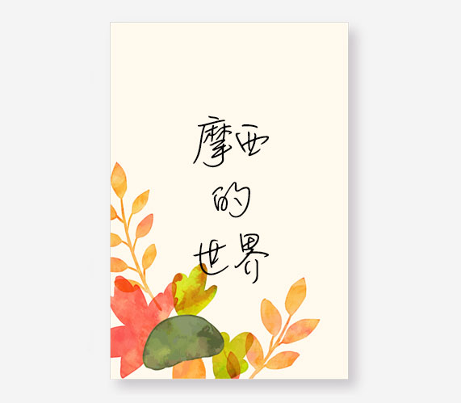

主页
粉丝群
精选节目
撩我
电台
精选节目
快来听听，让你的耳朵怀孕～
8
Mar 2019
长夜将尽
11
Feb 2019
暹粒旅记 1.10-14
19
Nov 2018
"人生的出场顺序真的很重要"
30
Step 2018
17岁时送你玫瑰，22岁请你喝酒
16
July 2018
一个少女的忽明忽暗的情事
13
Mar 2018
吹梦到西洲
3
Jan 2018
【长安初雪】一个女人的十年
30
Setp 2017
糟糕情书
10
Aug 2017
不是所有的鱼都会出现在同一片海里
28
June 2017
我以为我们还可以说说话
03
June 2017
没有嫁给你
10
May 2017
风虽大，都绕过我灵魂
17
Apr 2017
你曾为喜欢的人做出过什么改变
27
Feb 2017

去我想在的地方
07
Feb 2017
愿有人陪你颠沛流离
17
Dec 2016
芙蓉葬
02
Nov 2016
生在11月5日的Z先生
27
Oct 2016
那些我爱你的时光，像电影哭过就散场
13
Aug 2016
晚餐
25
June 2016
薄荷姑娘，这里有一封冰镇情书
20
May 2016
春风十里不如你
06
May 2016
南锣鼓巷走九遍
19
Apr 2016
你有空吗～
20
Dec 2015
乌镇年华
26
Oct 2015
不吃肉的姑娘
16
June 2015
请带一袋葡萄干给我
13
June 2015
只是一个简单的爱情故事
14-20
May 2015
与我长跑十年的女朋友就要嫁人了
20
Apr 2015
白开水小姐与可乐先生